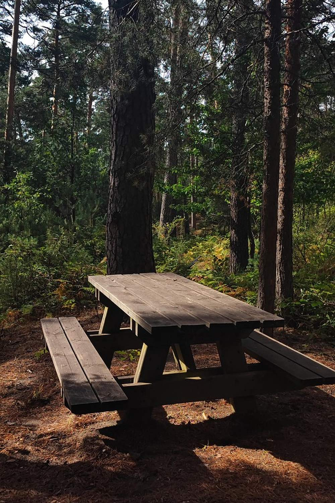

November 22, 2026 · By Pixel Punk Studio
You packed the snacks, charged the tablet and handed out a stack of activity pages. Twenty minutes later, a small voice from the back seat says "I don't feel good." For many kids, the worst thing to do in a moving car is exactly what we hand them to do: look down. The good news is that a printed sheet can still save the trip to Grandma's. You just have to choose activities that keep their eyes up, and save the rest for when the car has stopped.
Why looking down makes kids feel sick
Carsickness starts when the senses disagree. The inner ear feels every curve and stop, while eyes fixed on a page or screen report that nothing is moving. Children from about 2 to 12 are especially prone to it. Some can read all the way to Grandma's and others feel queasy after a few minutes, so go by what you know of your own child. No activity can promise a sick-free ride, but keeping eyes on the world outside gives a child a much better chance.
6 eyes-up printable games
Each of these uses a sheet you print or write out at home. A child only glances at it, or a passenger up front does the reading.
- Window bingo. Draw a grid of 9 squares and fill it with things to spot: a red truck, a cow, a water tower, a bridge. Big words or simple drawings work best, so one glance is enough.
- Road scavenger list. Write 10 things to find in order, from easy to rare. The first to call out each one gets a point, and the passenger keeps score.
- License plate tally. Print a list of the states. The passenger ticks each one the kids call out, and the family tries to beat its record on the way home.
- Fun fact guessing. Print a page of animal facts. The passenger reads the start of one and the kids guess the ending. No looking down at all.
- Word list challenge. Take the word list from a kids' word search and read out one word at a time. Who can spot something outside that starts with the same letter?
- Story cards. Write silly prompts on slips of paper ("a cow who drives a bus"). Draw one and let each person add a sentence to the story until you reach the next town.
Traveling with only the driver and the kids? Choose the games that need no reading at all, like spotting things or telling a story, and leave the paper in the bag. The driver's eyes stay on the road.
Save the heads-down pages for stops
Word searches and coloring pages are still great travel companions, as long as the car isn't moving. A break is the perfect moment for them, and they give restless kids something calm to do at a rest area, while you wait for food at a diner, or once you arrive and the grown-ups want to talk.
- Young kids: a short word search with a few big words, which they can finish in one stop, or a simple coloring page.
- Ages 6 to 10: a longer puzzle with a fun fact to read out when they get back in the car.
- Kids who never get sick: they may do fine with pages on the road, but stick to large print and stop at the first sign of feeling off.

Pack a car kit that travels well
- A clipboard, so pages don't slide and there is a hard surface at any picnic table.
- Crayons or a short, blunt pencil instead of a sharp one, since cars brake suddenly.
- A large zip bag per child, with their sheets inside, ready to hand back without turning around for long.
- Pages printed the night before, because a family printer never works on the morning you leave.
- The just-in-case bag: a sick bag, wipes, a spare shirt and water.
If your child starts to feel sick
- Put everything away, pages and screens alike.
- Get them looking outside, far ahead rather than at the things rushing past.
- Bring in fresh air with an open window or the air conditioning.
- Stop when you safely can and let them walk around for a few minutes.
If your child gets sick on most rides, talk to their pediatrician before the trip. They can tell you what else may help, including whether medicine is suitable for your child's age.
Free pages for the trip
Print your stop-time pages now so they are ready to go: our free bug word search has 8 easy words to find and then color, the Highland cow farm word search has 18 big words and a fun fact to read aloud, and the ladybug coloring page has bold lines for little hands. For longer trips, Bug Hunt Word Search has 55 bug puzzles for ages 4 to 10, and Life on the Farm Word Search has 50 farm puzzles with fun facts for ages 6 to 10.